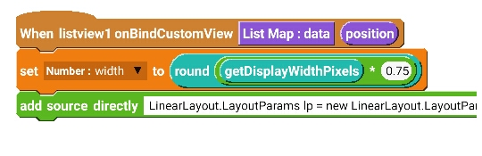
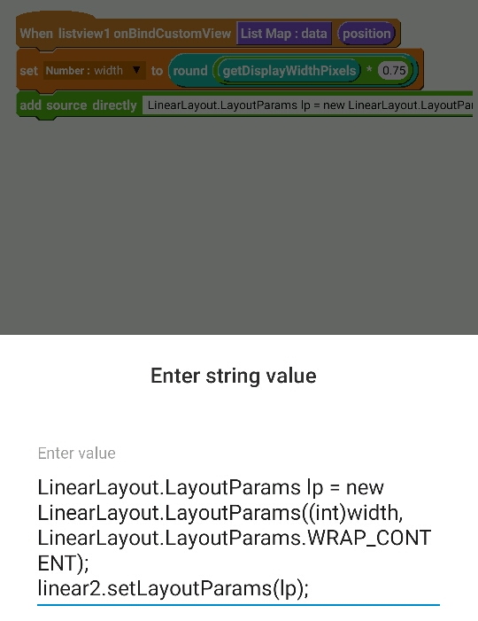
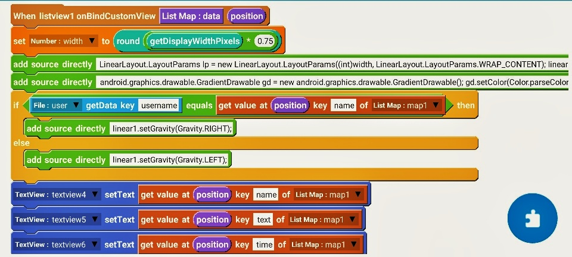

To remove the divider height of ListView displaying messages, put following code in onCreate, in an add source directly block
listview1.setDivider(null);
listview1.setDividerHeight(0);
To make the ListView scroll to display the last element of list when updated, put following code in onCreate, in an add source directly block.
listview1.setTranscriptMode(ListView.TRANSCRIPT_MODE_ALWAYS_SCROLL);
listview1.setStackFromBottom(true);
Firstly, in CustomView, insert a LinearH linear1, and inside that insert a LinearV linear2. Put all contents to be displayed in linear2.
Now, in event onBindCustomView, add a number variable width. Set width to getDisplayWidthPixels * 0.75, and set it as width of linear2 using following code.
LinearLayout.LayoutParams lp = new LinearLayout.LayoutParams((int)width,
LinearLayout.LayoutParams.WRAP_CONTENT);
linear2.setLayoutParams(lp);


In onBindCustomView event, add a add source directly block and put code to create a GradientDrawable with custom background color and rounded corners, as given below, and set it as background of linear2.
android.graphics.drawable.GradientDrawable gd = new android.graphics.drawable.GradientDrawable();
gd.setColor( Color.parseColor( "#ffffff" ) );
gd.setCornerRadius( 60 );
linear2.setBackground( gd );
To display messages of user on right and those of others on left, in onBindCustomView event, use blocks as shown in image above. The code used is:
If File user getData key username equals (get value at position key name of List Map map1) then,
linear1.setGravity(Gravity.RIGHT);
else,
linear1.setGravity(Gravity.LEFT);

Add following code in on button click event.
android.view.inputmethod.InputMethodManager imm = (android.view.inputmethod.InputMethodManager)getSystemService(INPUT_METHOD_SERVICE);
imm.hideSoftInputFromWindow(getCurrentFocus().getWindowToken(), 0);